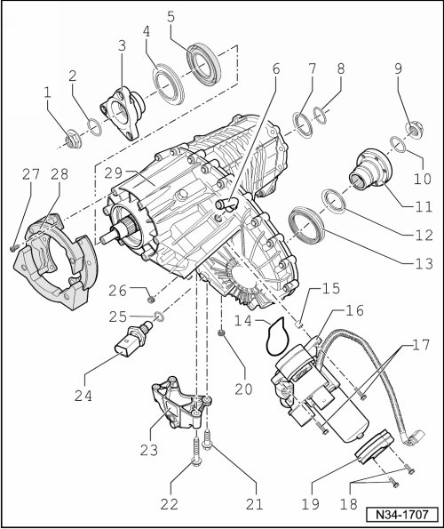

Transfer Case Assembly Overview
Transfer Case Assembly Overview

1 Nut, 130 Nm
• Always replace.
• Removing, refer to --> [ Remove output flange nut. ] Rear Driveshaft Output Flange Seal, with Transfer Case Installed.
• Installing, refer to --> [ Tighten new nut for output flange to specification. ] Rear Driveshaft Output Flange Seal, with Transfer Case Installed.
• Securing, refer to --> [ Secure nut at intended points (e.g., with a). ] Rear Driveshaft Output Flange Seal, with Transfer Case Installed.
• Insert with Loctite (648).
2 O-ring
• Always replace.
• Insert with gear oil, refer to --> [ Lubricate new O-ring with and insert. ] Rear Driveshaft Output Flange Seal, with Transfer Case Installed.
3 Output flange
• For rear driveshaft.
• Removing and installing, refer to --> [ Rear Driveshaft Output Flange Seal, with Transfer Case Installed ] Rear Driveshaft Output Flange Seal, with Transfer Case Installed.
4 Dust plate
• For output flange.
• Pressing off, refer to --> [ Pressing off dust plate. ] Driveshaft Output Flange and Differential Motor Seals, with Transfer Case Removed
• Pressing on, refer to --> [ Pressing on dust plate to
stop. ] Driveshaft Output Flange and Differential Motor Seals, with Transfer Case Removed
5 Oil seal
• For rear driveshaft output flange.
• Pulling out, refer to --> [ Pulling out seal for rear driveshaft output flange. ] Driveshaft Output Flange and Differential Motor Seals, with Transfer Case Removed
• Driving in, refer to --> [ Installing seal for rear driveshaft output flange. ] Driveshaft Output Flange and Differential Motor Seals, with Transfer Case Removed
• Replacing with transmission installed, refer to --> [ Rear Driveshaft Output Flange Seal, with Transfer Case Installed ] Rear Driveshaft Output Flange Seal, with Transfer Case Installed.
6 Breather pipe
• Removing, refer to --> [ Removing breather tube. ] Driveshaft Output Flange and Differential Motor Seals, with Transfer Case Removed
• Installing, refer to --> [ Installing breather tube. ] Driveshaft Output Flange and Differential Motor Seals, with Transfer Case Removed
7 Input shaft seal
• Removing and installing, refer to --> [ Input Shaft Seal ] Input Shaft Seal.
8 O-ring
• Always replace.
• Insert into groove of input shaft, refer to --> [ Insert into O-ring into groove of input shaft. ] Driveshaft Output Flange and Differential Motor Seals, with Transfer Case Removed
9 Nut, 130 Nm
• Always replace.
• Removing, refer to --> [ Remove the output flange nut. ] Front Driveshaft Output Flange Seal, with Transfer Case Installed.
• Installing, refer to --> [ Tighten new nut for output flange to specification. ] Front Driveshaft Output Flange Seal, with Transfer Case Installed.
• Securing, refer to --> [ Secure nut at intended points (e.g., with a). ] Front Driveshaft Output Flange Seal, with Transfer Case Installed.
• Insert with Loctite (648).
10 O-ring
• Always replace.
• Insert with gear oil, refer to --> [ Lubricate new O-ring with and insert. ] Front Driveshaft Output Flange Seal, with Transfer Case Installed.
11 Output flange
• For front driveshaft.
• Removing and installing, refer to --> [ Front Driveshaft Output Flange Seal, with Transfer Case Installed ] Front Driveshaft Output Flange Seal, with Transfer Case Installed.
12 Dust plate
• For output flange.
• Pressing off, refer to --> [ Pressing off dust plate. ] Driveshaft Output Flange and Differential Motor Seals, with Transfer Case Removed
• Pressing on, refer to --> [ Pressing on dust plate until
seated. ] Driveshaft Output Flange and Differential Motor Seals, with Transfer Case Removed
13 Oil seal
• For front driveshaft output flange.
• Pulling out, refer to --> [ Pulling out seal for rear driveshaft output flange. ] Driveshaft Output Flange and Differential Motor Seals, with Transfer Case Removed
• Driving in, refer to --> [ Driving in seal for front driveshaft output flange. ] Driveshaft Output Flange and Differential Motor Seals, with Transfer Case Removed
• Replacing with transmission installed, refer to --> [ Front Driveshaft Output Flange Seal, with Transfer Case Installed ] Front Driveshaft Output Flange Seal, with Transfer Case Installed.
14 O-ring
• Must rest in the groove of the differential motor (V253)
Allocation.
15 Alignment bushing
• Quantity: 2
• For aligning the differential motor (V253) on transfer case.
16 Differential motor (V253)
• Removing and installing, refer to --> [ Differential Motor ] Differential Motor.
• The following components are integrated into the differential motor: differential position sensor (G398), differential position sensor 2 (G482), motor temperature sensor (G407), brake for locking motor and oil temperature sensor (G8)
• Differential motor and integrated components can be tested via "Guided fault Finding"
• When replacing differential motor, the oil temperature sensor (G8) --> [ (Item 24) , 17 Nm ] , must be replaced along with it, refer to --> [ Repair solution for replacement of and for malfunctioning ] Driveshaft Output Flange and Differential Motor Seals, with Transfer Case Removed
• As of 02.05, the differential motor is available only together with clamp --> [ (Item 19) Bracket ].
Allocation.
17 Bolt, 27 Nm
18 Bolt, 14 Nm
19 Bracket
• For securing the differential motor (V253) to the transfer case.
• No longer available as separate part as of 02.05
Allocation.
20 Oil drain plug, 20 Nm
• Always replace.
21 Bolt, 20 Nm
22 Bolt, 20 Nm
23 Bracket
• Removing and installing, refer to --> [ Transmission Carrier and Bracket ] Transmission Carrier and Bracket.
24 Oil temperature sensor (G8), 17 Nm
• On certain transmissions, a sealing plug may also be installed, refer to --> [ Repair solution for replacement of and for malfunctioning ] Driveshaft Output Flange and Differential Motor Seals, with Transfer Case Removed
• The discontinuation of the oil temperature sensor occurred shortly after start of production, while simultaneously transfer cases were introduced that were no longer equipped with a hole in the housing for the oil temperature sensor.
• Repair solution for defective oil temperature sensor, refer to --> [ Repair solution for replacement of and for malfunctioning ] Driveshaft Output Flange and Differential Motor Seals, with Transfer Case Removed
25 Oil seal
• Always replace
26 Oil filler plug, 20 Nm
• Always replace
27 Bolt, 32 Nm
28 Vibration damper
• Equipped on some transmissions.
• Observe installed location, refer to --> [ If equipped, install vibration damper to transfer case and tighten bolts. ] Transfer Case.
29 Transfer case